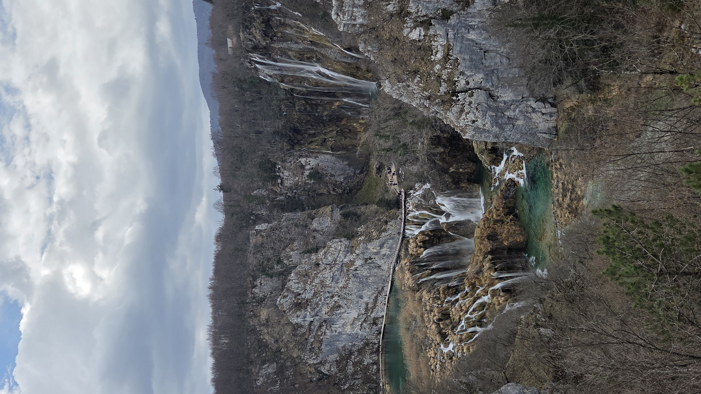
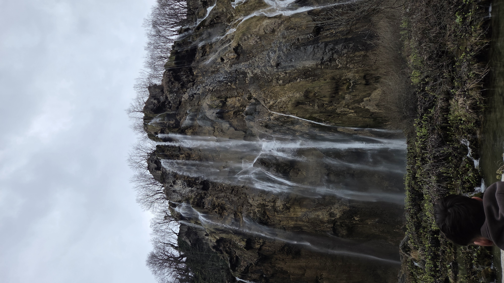
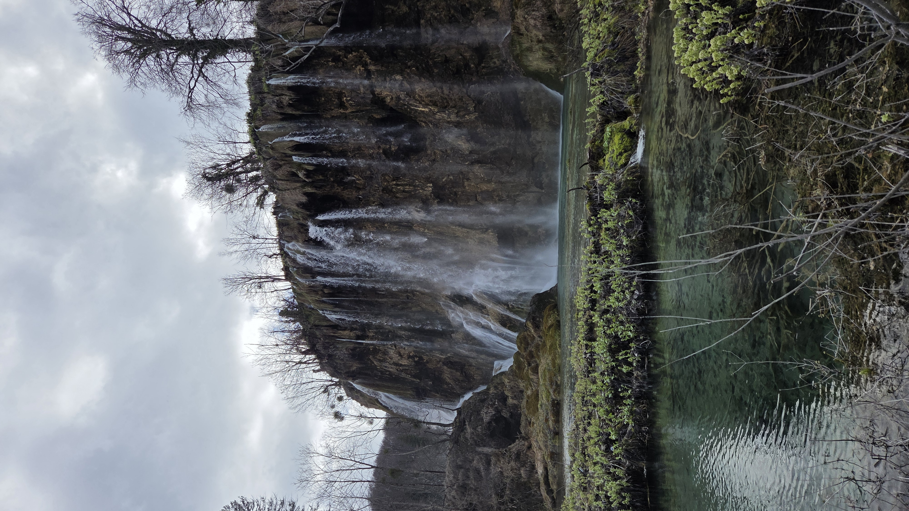

11 Maggio - Cascate e natura incontaminata



Il secondo giorno è stato dedicato interamente alla natura. Abbiamo visitato il Parco Nazionale dei Laghi di Plitvice, Patrimonio dell'Umanità UNESCO. Il parco è un complesso sistema di 16 laghi disposti a terrazze, collegati tra loro da una serie infinita di cascate spettacolari e corsi d'acqua limpidissima. La visita é inoltre stata assistita da una guida locale, che ci ha raccontato interamente la storia dei laghi. Una cosa che mi é rimasta impressa é la presenza di una serie di minerali nell'acqua che se toccata anche solo con un dito potrebbe compromettere la bellezza e il colore dei laghi.
Abbiamo percorso chilometri di passerelle in legno sospese a pochi centimetri sull'acqua, che ci hanno permesso di attraversare i laghi senza intaccare l'ecosistema circostante. I colori dell'acqua variavano dall'azzurro intenso, al verde smeraldo, fino al blu profondo, a seconda della quantità di minerali presenti e del riflesso del sole.
Oltre alla camminata, l'escursione ha previsto anche un breve tragitto su un battello elettrico che ha attraversato il lago più grande, il lago Kozjak. È stata la giornata più stancante dal punto di vista fisico, ma sicuramente la più gratificante a livello visivo e paesaggistico.